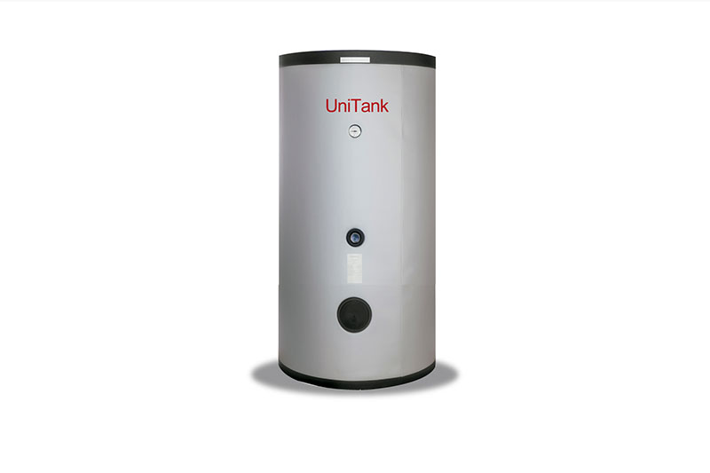

Estanque Acumulador de Agua

'">
Estanque Acero Inoxidable 300L
¿Por qué es necesario?
El eremitorio se ubica en la cordillera, donde el agua es un recurso vital pero escaso durante los meses de verano. Actualmente dependemos de vertientes naturales y del deshielo, pero necesitamos mejorar nuestra capacidad de almacenamiento para asegurar el abastecimiento durante todo el año.
Un estanque acumulador de acero inoxidable de 300 litros nos permitirá:
- Almacenar agua potable de forma segura e higiénica
- Garantizar reserva durante períodos de escasez
- Mejorar la gestión del recurso hídrico
- Asegurar agua para las necesidades básicas de la comunidad y los visitantes
Especificaciones del proyecto
Material: Acero inoxidable AISI 304
Capacidad: 300 litros
Tipo: Estanque acumulador vertical
Instalación: Incluye accesorios y conexiones
Cómo puedes ayudar
El costo total estimado del proyecto, incluyendo el estanque, instalación y accesorios, es de aproximadamente $450.000 CLP.
Puedes aportar:
- El monto total del proyecto
- Una parte proporcional
- Donando el estanque directamente
- Colaborando con la mano de obra de instalación
"El agua es vida. En el desierto de la cordillera, cada gota es un regalo de la Providencia."
Quiero Aportar a este Proyecto
También puedes contactarnos para coordinar donación directa de materiales